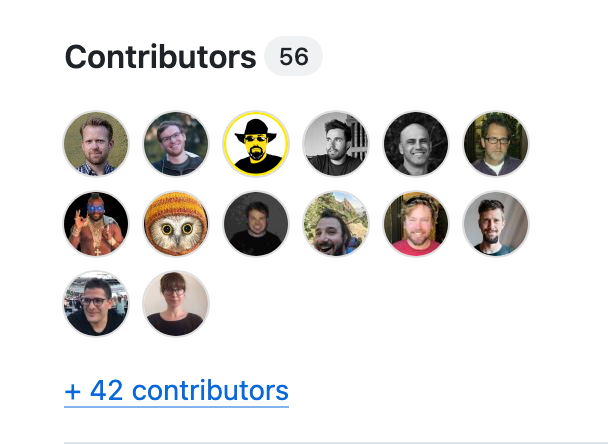
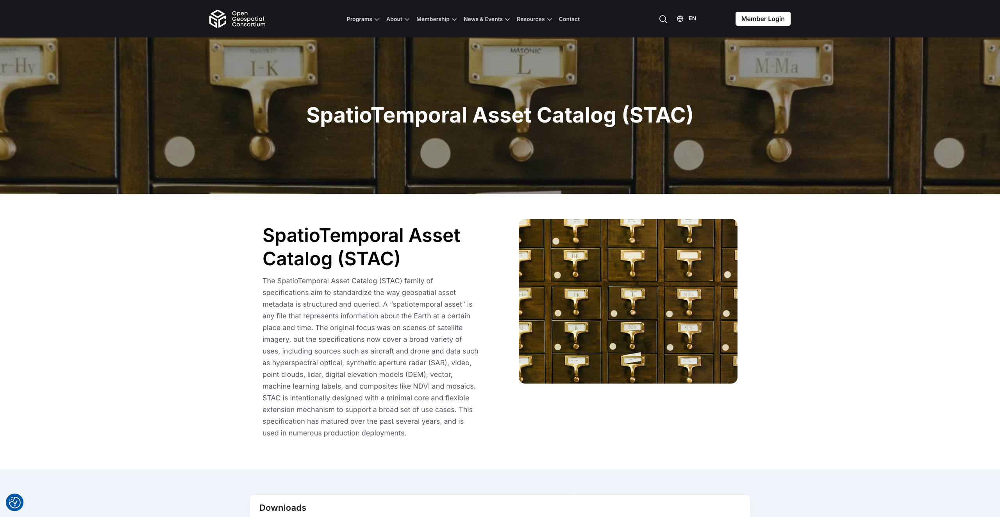
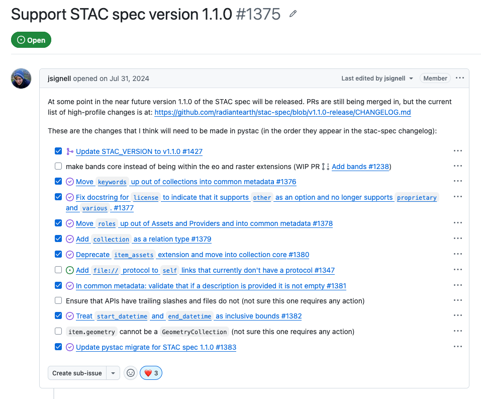
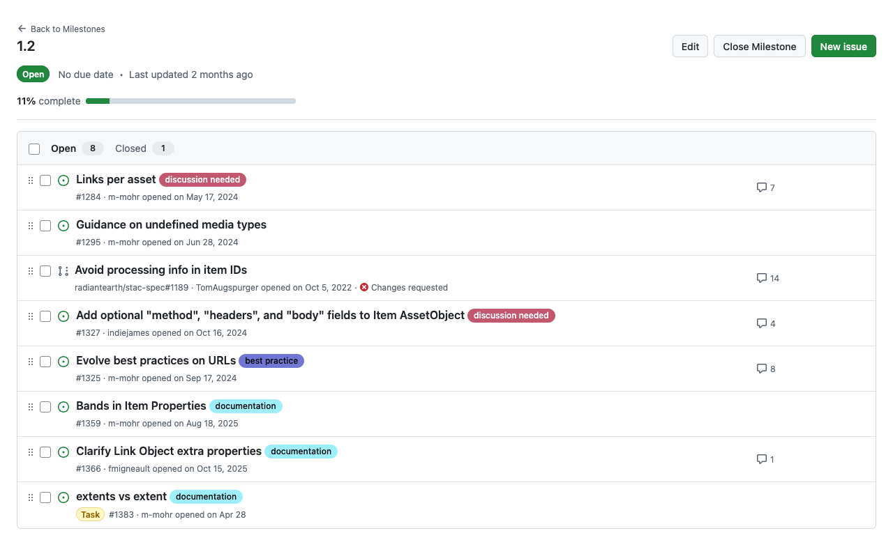
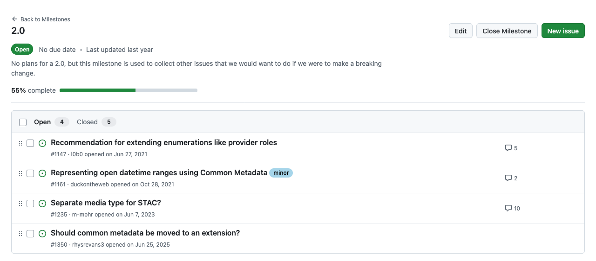
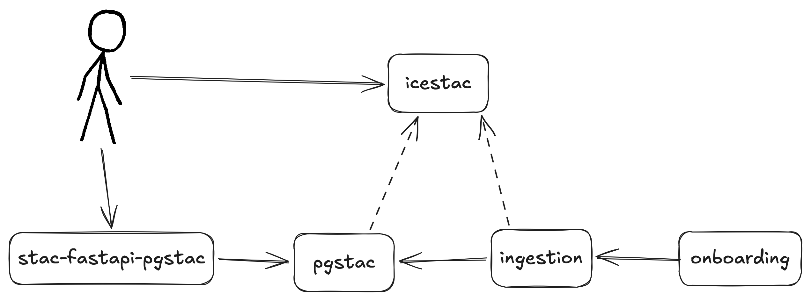

STAC roadmap orienteering
Pete Gadomski
Development Seed, STAC Project Steering Committee member
What the
 ?
?
Open, community specification for geospatial metadata

Stands on shoulders
.jpg)
Based on GeoJSON, aligns with OGC API - Features
https://element84.com/software-engineering/stac-a-retrospective-part-2-why-stac-was-successful/
Image credit Public Record Office of Northern Ireland, No restrictions, via Wikimedia Commons
Three data structures, one API

Extensions for customization
| Extension | Prefix | Version | Description |
|---|---|---|---|
| Electro-Optical | eo | 2.0.0 | Snapshot of the Earth, e.g. cloud cover and spectral bands |
| File Info | file | 2.1.0 | File size, data type and checksum for assets and links |
| Landsat | landsat | 2.0.0 | Landsat data fields |
| Projection | proj | 2.0.0 | Items whose assets are in a geospatial projection |
| SAR | sar | 1.3.1 | Synthetic-aperture radar for a single date and time |
| Satellite | sat | 1.2.0 | Metadata for data collected from satellites |
| Scientific Citation | sci | 1.0.0 | How data should be cited or referenced |
| View Geometry | view | 1.1.0 | Angles of sensors and other radiance angles |
Batteries included
| Tool | Language | Stars1 | Description |
|---|---|---|---|
| pystac | Python | 447 | Python library for working with any STAC |
| stac-fastapi | Python | 316 | STAC API implementation with FastAPI |
| pgstac | PLpgSQL | 213 | Storing and accessing STAC in PostgreSQL |
| pystac-client | Python | 199 | Python client for searching STAC APIs |
| rustac | Rust | 141 | The power of Rust for the STAC ecosystem |
| stac-geoparquet | Python | 137 | Convert STAC items to/from GeoParquet |
| titiler-pgstac | Python | 120 | TiTiler + PgSTAC |
| stactools | Python | 112 | Command line utility and Python library for STAC |
| stac-fastapi-pgstac | Python | 103 | PostgreSQL backend for stac-fastapi using pgstac |
1 GitHub stars as of 2026-06-09
Governance
Project Steering Committee (PSC)
(M)akes decisions on STAC and STAC API project issues. STAC is concerned with the following GitHub repositories and organizations:
- stac-spec
- stac-api-spec
- stac-extensions
- stac-api-extensions
Current PSC


OGC Community Standard
October 2025

Software and extension maintainership
_cover.jpg)
McLOUGHLIN BRO'S, Public domain, via Wikimedia Commons
STAC Roadmap Orienteering
STAC v1.1
Released September 2024
- Bands
- License
- Common metadata
- Links
- Item assets
Tooling support is WIP 🚧

STAC v1.2

STAC v2.0 💥

Does OGC blessing change things?
No
.jpg)
Siena College, CC BY 2.0, via Wikimedia Commons
How do I propose changes?
Open a PR or an issue
What if things are too slow?
- Ping in Cloud-Native Geospatial Slack
- Ping the maintainer(s) directly
- If it's a spec issue, ping the PSC: stac-psc@radiant.earth
- 🙈 Insert money
A digression...


 et al....
et al....
Microsoft, Public domain, via Wikimedia Commons | NASA, Public domain, via Wikimedia Commons | ESA_logo.svg: ESAderivative work: Ssolbergj, Public domain, via Wikimedia Commons | CNES, Public domain, via Wikimedia Commons | https://vito.be/en
{kind=link}
{kind=link}
{kind=link}
Who maintains it?


To fork, or not to fork?

| Pros | Cons |
|---|---|
| Control over API stability | Harder for subject-matter experts to contribute |
| Faster release cadence | Slower or impossible uptake of community contributions |
| Solely responsible for vulnerabilities and bug fixes | Sometimes, you get fixes for free |
| Complete control of feature prioritization | You might get features you didn't know you wanted |
Peachyeung316, CC BY-SA 4.0, via Wikimedia Commons
{kind=link}
What the Zarr?

Data storage and metadata

https://zarr-specs.readthedocs.io/en/latest/v3/core/index.html#concepts-and-terminology
Not inherently geospatial
- GeoZarr OGC working group
- Geospatial conventions are like extensions
- STAC + Zarr community sprint 2025 (see picture)

Zarr + STAC
One Big Zarr (Aligned Data)

Zarr + STAC
Many Smaller Zarrs (Unaligned Data)

What should you be thinking about?

Transactional object storage

Client-side tiling and visualization

"AI-ready" geospatial metadata

Embeddings for search and discovery
Fin
https://www.gadom.ski/presentations/2026-06-09-stac-orienteering.html